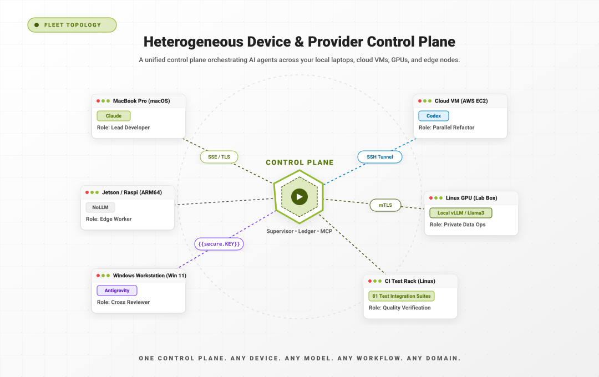
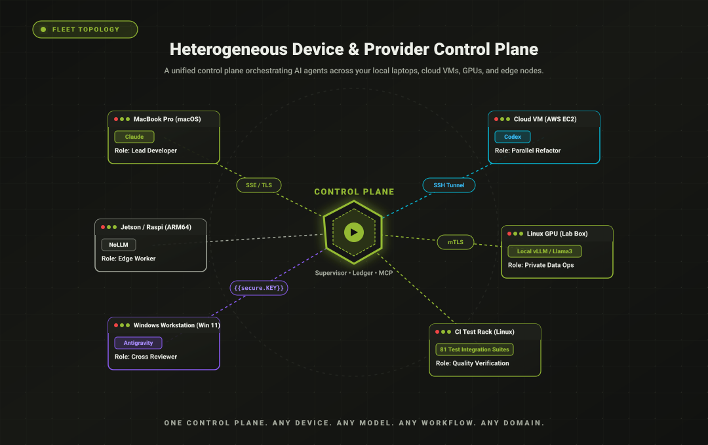

What Kubernetes did for containers, apra-fleet does for AI
agents: scheduling, credentials, isolation, and observability for an
agentic workforce -- on hardware you already own, mixing every LLM
provider at once.
$npm install -g @apralabs/apra-fleet
Windows / macOS / LinuxNode.js 22+MCP-compatibleNo paid tier -- bring your own LLM keys
fleet consolelive loop
register members -- plain language
"Register a local member called doer. Register
another called reviewer. Pair them."
Three real moments, not a mockup: the
registration wording, the manifest, and the launch command are all
quoted from the project README.
The problem
One agent is a demo. Fifty is an operations problem.
A laptop in the office, a GPU box in the lab, a few VMs, and
several provider subscriptions -- nobody's single-agent tool answers the
questions that show up next:
Which machine?
Real devices you already own --
registered, credentialed, health-checked members. Local or over SSH, on
Windows, macOS, or Linux.
Which model?
Claude for review, a cheap tier for
mechanical edits, a local model for private data -- one fleet, routed by
cost tier, switchable per task.
Who watches?
Durable workflows with watchdogs,
stall detection, reservations, and live dashboards. Dead agents get
detected; stalled work gets resumed.
Who holds the keys?
Secrets entered out-of-band,
never visible to any model. Composed, allow-listed permissions per member
-- not god-mode.
What it is
One control plane. Any device. Any model.
apra-fleet is an MCP server + CLI. Any MCP-capable agent --
Claude Code, Codex, Copilot, OpenCode, Antigravity -- becomes the
orchestrator of a fleet: it registers machines as members, dispatches
commands and prompts to them, moves files, and brokers credentials. You
drive it in plain language: "Register a local member called doer.
Register another called reviewer. Pair them."


The fleet topology, from the repository's own docs: a control
plane (server, workflow engine, supervisor) dispatching to members that
each pair a real machine with a provider CLI.
The architecture
Six layers. Software engineering is only the top one.
The architecture overview: layer by layer -- from OS primitives and provider CLIs up through the fleet MCP server, agent roles, and client runners. Note where the seam sits: Layer 4, apra-fleet-workflow, is a domain-agnostic engine; Layer 5, apra-fleet-se, is the software-engineering vertical built on top of it.
The layered stack, from the repository's own README: fleet-supervisor and fleet-sprint (Layer 5) sit on the generic workflow engine (Layer 4) -- a seam you can check. The runner executes any authored workflow directory (docs/authoring-workflows.md) -- software engineering is just the one wired up.
Why it's different
Built as an operations layer, not another agent framework
Each of these is checkable in the repository -- file paths
included.
Across machines and vendors
Agent frameworks compose agents inside one process. apra-fleet's unit of execution is a member: a machine plus a provider CLI, swappable at registration. Every provider sits behind one strategy interface, which is what makes mixing Claude, Codex, Copilot, Antigravity, and local models genuinely work.
src/providers/ -- AgentStrategy
Explore with agents, operate with programs
Discover a workflow with an LLM orchestrating -- flexible and
token-hungry. Then harden it into a deterministic program:
shell, git, and file steps run at zero tokens; models
are invoked only at judgment nodes (review this diff, plan this
backlog, decide this exception).
Workflows are resumable programs with execution journals, turn
budgets, stall detection, crash watchdogs, member reservations, and
self-healing for credential auth and orphaned CLI processes -- the
unglamorous layer that lets multi-hour unattended runs actually
finish.
Secrets are typed into a separate terminal, encrypted
at rest, and resolved server-side at execution time. Credentials scope to
members, expire on TTL, and carry per-credential network egress policy.
Members run with composed, provider-native, allow-listed permissions.
docs/features/oob-auth.md -- docs/architecture.md
The cost curve
Pay to discover a workflow. Then run it for pennies.
One measured example, from this repository's own e2e
setup-and-teardown step: four real LLM-orchestrated runs cost $0.46 to
$3.05 each. Hardened into a deterministic workflow, the same step now runs
at roughly $0 -- the model is simply no longer in the loop for mechanical
steps. Development tokens are not operating tokens.
Real measurements from the repo's own e2e step, before and
after hardening -- a single documented example, not a benchmark suite.
The existence proof
This project is built by the product itself
apra-fleet's flagship workflow, fleet-sprint,
develops software autonomously: plan -> develop -> review -> deploy
-> integration-test -> harvest, in cycles, against an issue tracker.
It is how this codebase ships.
Planner
Turns a sprint goal into a beads feature+task DAG with acceptance criteria. No structured verdict -- the DAG itself is the output.
Doer
Works an assigned list of ready task beads, committing after each. Never closes a feature or bug issue itself -- that is another role's job.
Reviewer
Reviews each commit
against the task's acceptance criteria; can reopen work. Never closes
issues either -- only reports a verdict.
Integ-Test-Runner
Runs the integration playbook, closes features and verify-set beads against real evidence, and files bugs for what fails.
Harvester
Extracts durable
knowledge into docs, updates the README and changelog, and defers
what's still low priority.
Each role is a separate dispatch, and each dispatch
can land on a different provider -- in the manifest above, doer-1
runs on Sonnet (claude), integration-test-gpu on Antigravity
(agy), reviewer-1 on Opus (claude). That's not incidental:
cross-provider review is a quality mechanism -- a
different model, with different blind spots, checks every change (README,
"Any model"). Role definitions live at
packages/apra-fleet-se/apra-pm/agents/<role>.md.
The fleet-sprint dashboard during a real autonomous run,
captured live: the sprint's own integration tester finds two real bugs,
files them against itself, and a second cycle plans, fixes, and closes
them. Captions are burned into the recording.
2,300+
unit tests in the codebase the fleet maintains
81
files in the integration suite run against real backends
Via npm (Node.js 22+), or grab the standalone installer for your
platform from Releases.
npm install -g @apralabs/apra-fleet
apra-fleet
cd ~/.apra-fleet/bin && apra-fleet start
Connect your agent
Load the fleet server in Claude Code with /mcp. Your
agent now has a fleet.
Register members -- in plain language
"Register a local member called doer. Register another
called reviewer. Pair them.""Register 192.168.1.10 as build-server. Username joe,
work folder /home/joe/projects/myapp."
Remote passwords are collected out-of-band -- typed into a separate
terminal, used once to set up SSH keys, then forgotten.
Open the dashboard and watch the fleet plan, build, review, test,
and ship in a loop. New to fleet-sprint? Start with the
plain-English
getting-started guide.
This walkthrough uses Claude Code, but the same install and workflow
commands work with any supported provider. For Antigravity/AGY:
apra-fleet --llm agy, then restart Antigravity to load the
fleet MCP server. For OpenCode: apra-fleet --llm opencode.
Codex and Copilot are also supported -- see
docs/install.md
for the full provider list.
Current state -- v0.4.0
What works today, and what's still rough
An honest status page beats a surprised user. This list
comes from the v0.4.0 release notes, unedited in substance.
Daily-driver solid
Registering and operating a mixed-provider fleet, local and over SSH, on Windows / macOS / Linux
Single autonomous fleet-sprint runs -- multi-hour, unattended, with stall detection and crash recovery; this is how the project builds itself
Those compose agents inside one process; apra-fleet operates agents across real machines, providers, and days-long workflows.
The "Overlap" and "Where apra-fleet differs" text is quoted from the project README's own comparison table; the category labels are generalized restatements, and the example tools per category are common, widely-known names for orientation, not a repo claim about those specific products.
Who is it for? Developers already
paying for more than one AI subscription who want them working as one team;
teams with idle real hardware; anyone whose agent runs are long enough to
need babysitting; anyone who won't paste credentials into a model chat.
When not to use it: a one-off single-file change needs no fleet.